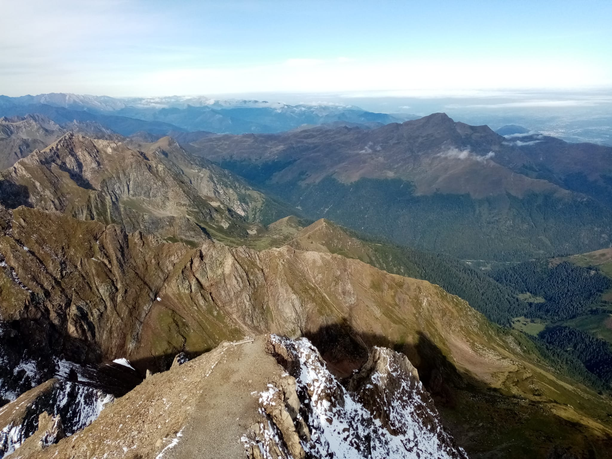
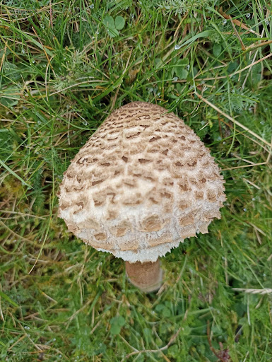
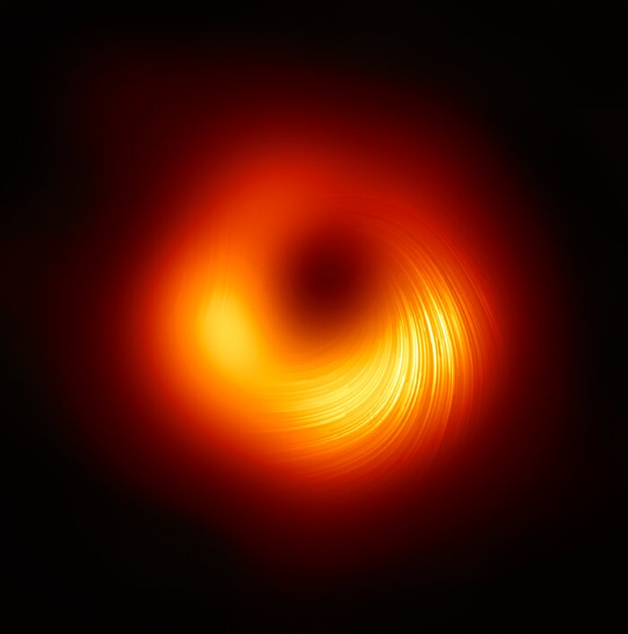

Rubrique sorties et voyages
Sur cette page, vous pourrez trouver tous les articles racontant nos sorties et nos voyages. Vous pourrez par exemple consulter un article sur notre voyage au pic du midi, le voyage d'intégration des E². La majorité de ces articles sont en rapport avec l'espace.

|
La sortie à la Cité de l'espace Le 18 novembre 2021, la classe des E² du lycée Pierre Paul Riquet de St Orens est partie visiter la Cité de l’espace. Ce musée centré sur l’espace et les sciences, situé à Toulouse, propose |
|  |
Le voyage d'intégration au Pic du Midi Les 22, 23 et 24 septembre, la classe E² a pu partir en voyage d’intégration au Pic du Midi. Ce voyage de trois jours et deux nuits consistait en plusieurs... |
|  |
La faune et la flore au Pic du Midi Les Pyrénées sont une partie de la France magnifique, avec une biodiversité d’une diversité hors du commun. Et pour observer cette diversité, il ne faut pas chercher très loin, elle est omniprésente... |
|
Le TBL, ou le Spectropolarimètre Pendant notre voyage au Pic du Midi, nous avons pu voir le TBL : le Télescope Bernard Lyot, qui possède un instrument tellement rare qu’il n’en existe que... |
|
|  |
Les Trous noirs Invisibles et imprévisibles, les trous noirs sont les objets les plus mystérieux du cosmos. Ces objets sont capables d'avaler des étoiles, des corps célestes. Pas même la lumière ne peut s'en échapper... |